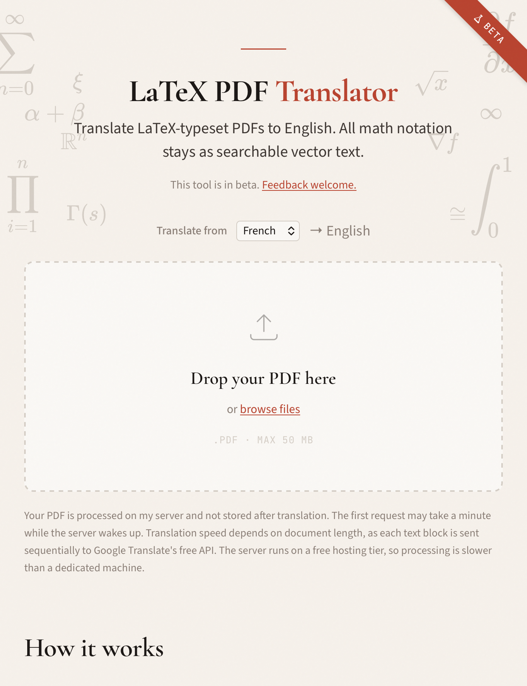
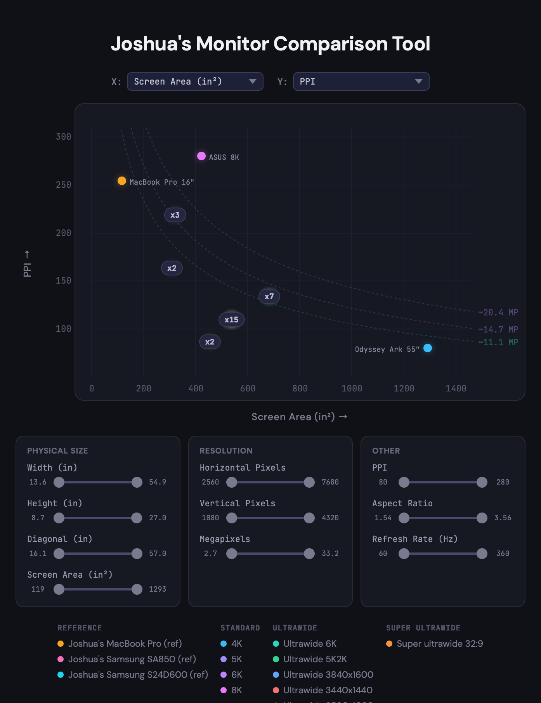

Hey there!
I'm Joshua Swanson.
I hold an MSc in Computer Science from ETH Zürich, with a major in Machine Intelligence and a minor in Data Management, and a BA in Mathematics and a BSc in Computer Science from the University of Washington.
My research interests are in AI security and privacy. My most recent co-authored paper has been highlighted by ETH Zürich and featured in The New York Times, The Guardian, Bloomberg, and others.
Find me on the internet:
Projects
Small tools and side projects I build for fun.
Inventory Tracker
Self-hosted web app for tracking dental clinic inventory, built for a friend's practice.
iOS Activity Monitor
Live process monitor for a USB-tethered iPhone or iPad. Like macOS Activity Monitor, but for iOS.


Slides to Video
Turn a slide deck into a narrated video with AI voice cloning. Upload a PDF, write a script, provide a voice sample, get a presentation video.
SSH GUI
Finder-style desktop GUI for SSH servers. Column browser, integrated terminal, drag-and-drop file transfer.
Ballroom
A log of my competitive ballroom dancing journey in Switzerland.
Past
I competed in the 71st ETDS (European Tournament for Dancing Students) in Enschede, Netherlands, and qualified for the Latin Legends category.
I placed 4th in D class Latin at the Trafo Cup in Baden, Switzerland.
I placed 4th in D class at the Schweizer Meisterschaften Standard in Baden, Switzerland.
I received my tournament license from the Schweizer Tanzsport Verband (Swiss Dancesport Federation).
I placed 3rd in Latin Masters at the 70th ETDS (European Tournament for Dancing Students) in Monheim am Rhein.
Publications
The complete works.
Large-scale online deanonymization with LLMs
USENIX Security 2026; ICLR 2026 Workshop (Agents in the Wild)
Modal Aphasia: Can Unified Multimodal Models Describe Images From Memory?
ICLR 2026
Say hello.
Don't be a stranger.
Find me on the internet:
I am echoing the standing invitation:
I like getting email. I have never, not even once, regretted getting email from a startup, engineer, student, or person interested in our industry. There is absolutely nothing you can do in my inbox which will cause me to think poorly of you as a person or make fun of you to my friends. The worst thing that has ever happened from someone sending me an email is me being a bit busy that day and not replying. Feel free to send me email.
My email follows the standard ETH format: first initial + last name at ethz.ch.